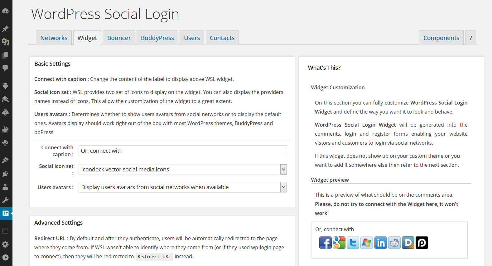

Widget Customization
Notes
In order for WordPress Social Login to properly work, you have to setup and configure Social Networks first.
This authentication Widget WILL NOT show up for connected users.
To customize the way you want it to look and behave, goto WordPress Social Login > Widget tab.
On this section you can fully customize WordPress Social Login Widget and define the way you want it to look and behave.
WordPress Social Login Widget will be generated into the comments, login and register forms enabling your website vistors and customers to login via social networks.
|  |

|
Basic Settings
Connect with caption : Change the content of the label to display above WSL widget.
Social icon set : WSL provides two set of icons to display on the widget. You can also display the providers names instead of icons. This allow the customization of the widget to a great extent.
Users avatars : Determines whether to show users avatars from social networks or to display the default ones. Avatars display should work right out of the box with most WordPress themes, BuddyPress and bbPress.
Advanced Settings
Redirect URL : By default and after they authenticate, users will be automatically redirected to the page where they come from. If WSL wasn't able to identify where they come from (or if they used wp-login page to connect), then they will be redirected to Redirect URL instead.
Force redirection : When set to Yes, users will be always redirected to Redirect URL.
Authentication display : Determines how the authentication dialog is rendered. You can chose to open the dialog in a popup or to in page. (Authentication display was previously known as Authentication flow).
Widget display : Determines where you want to show the authentication widget.
Notification : Determines whether you want to receive a notification by mail when a new user is logged in via WSL.
Custom CSS
To customize the default widget styles you can either: change the css in the text area bellow Custom CSS, edit the WSL css file assets/css/style.css, or add it to your website theme files.
The basic widget markup is the following :
<div class="wp-social-login-widget"> <div class="wp-social-login-connect-with">{connect_with_caption}</div> <div class="wp-social-login-provider-list"> <a class="wp-social-login-provider wp-social-login-provider-facebook"> <img src="{provider_icon_facebook}" /> </a> <a class="wp-social-login-provider wp-social-login-provider-google"> <img src="{provider_icon_google}" /> </a> <a class="wp-social-login-provider wp-social-login-provider-twitter"> <img src="{provider_icon_twitter}" /> </a> </div> <!-- / div.wp-social-login-connect-options --> <div class="wp-social-login-widget-clearing"></div> </div> <!-- / div.wp-social-login-widget -->
The default widget style is the following :
.wp-social-login-connect-options{ padding: 10px; }
.wp-social-login-connect-options a {text-decoration: none; }
.wp-social-login-connect-options img { border: 0 none; }
Notes for old WSL users:
The widget is generated by /includes/widgets/wsl.auth.widget.php, function wsl_render_login_form().
The default widget style can be found on WSL css file assets/css/style.css.
Custom integration in your website
WordPress Social Login will attempts to work with the default WordPress comment, login and registration forms. If this widget does not show up on your custom theme, or if you want to add the social login widget to another location in your theme, you can insert the following code in that location:
<?php do_action( 'wordpress_social_login' ); ?>Or, for posts and pages:
[wordpress_social_login]
Note:
WSL Widget will ONLY show up for NON connected users.
Tip:
You can use HTML Javascript Adder plugin in combination with WSL to display the Widget in your website sidebar by using the shortcode [wordpress_social_login] .
Please, do not submit issues here.
This comment section is for a general question and feedback. If you want to report a bug, please refer to the Support section.